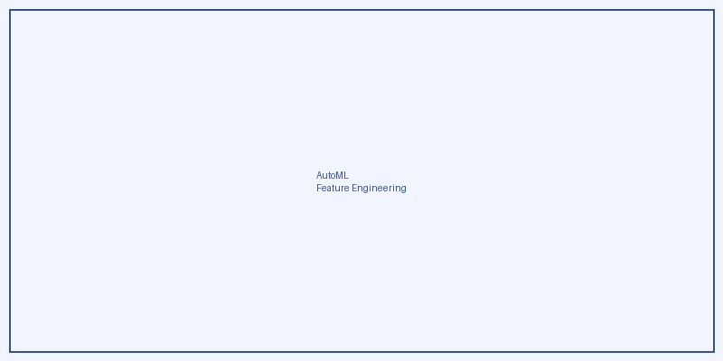

Preparación Automática
Limpieza, imputación, normalización. Riesgos: sesgo en recolección oculto, datos faltantes con significado causal.
Machine Learning automatizado que preserva explicabilidad, equidad y robustez
AutoML acelera desarrollo: selecciona modelos, optimiza hiperparámetros, realiza feature engineering automáticamente. Pero acelerar sin cuidado produce IA opaca, injusta y frágil.
Nuestro foco: AutoML que verifica explicabilidad a lo largo del pipeline, detecta y mitiga sesgos durante automatización, y construye robustez desde el diseño. Automatización sin sacrificar trustworthiness.
Etapas donde la automatización introduce riesgos de trustworthiness
Limpieza, imputación, normalización. Riesgos: sesgo en recolección oculto, datos faltantes con significado causal.
Selección y creación automática de variables. Riesgos: proxies de atributos protegidos, features no interpretables.
Selección y optimización automática de arquitectura. Riesgos: complejidad insuficientemente explicada, modelos no verificables.
Métricas automáticas de performance. Riesgos: solo optimiza accuracy, ignora fairness y robustness.
Cómo preservar valores humanos durante automatización
Limitar AutoML a modelos interpretables (árboles de decisión, linear). Trade-off accuracy vs. explicabilidad conocido.
Optimizar simultáneamente accuracy, fairness y robustness. Pareto frontiers de modelos confiables.
Pipeline AutoML que valida automáticamente atributos de confianza. Detección de sesgos durante búsqueda.
Tensiones entre automatización y trustworthiness
Modelos simples son interpretables pero menos precisos. Modelos complejos son más precisos pero opacos. Balance no trivial.
Buscar modelos confiables requiere exploración extendida. Costo computacional substancial comparado con AutoML sin restricciones.
What metric to optimize? Fairness has multiple definitions. Robustness depends on threat type. There is no universal answer.
In the Trustworthy AutoML line of the Trustworthy AI group at IAFER, we automate the search for ML solutions that not only maximize accuracy, but also satisfy constraints on fairness, robustness, and explainability.

2025AutoEnergy presents an algorithm for automated feature engineering applied to energy storage optimization. It integrates automatic feature selection with a decision-focused learning approach to obtain more interpretable and efficient models for operational decisions.